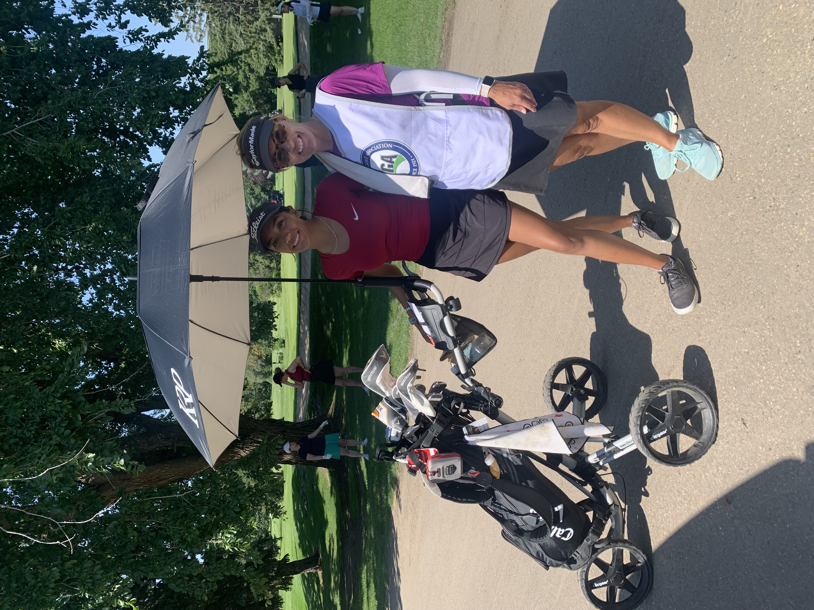
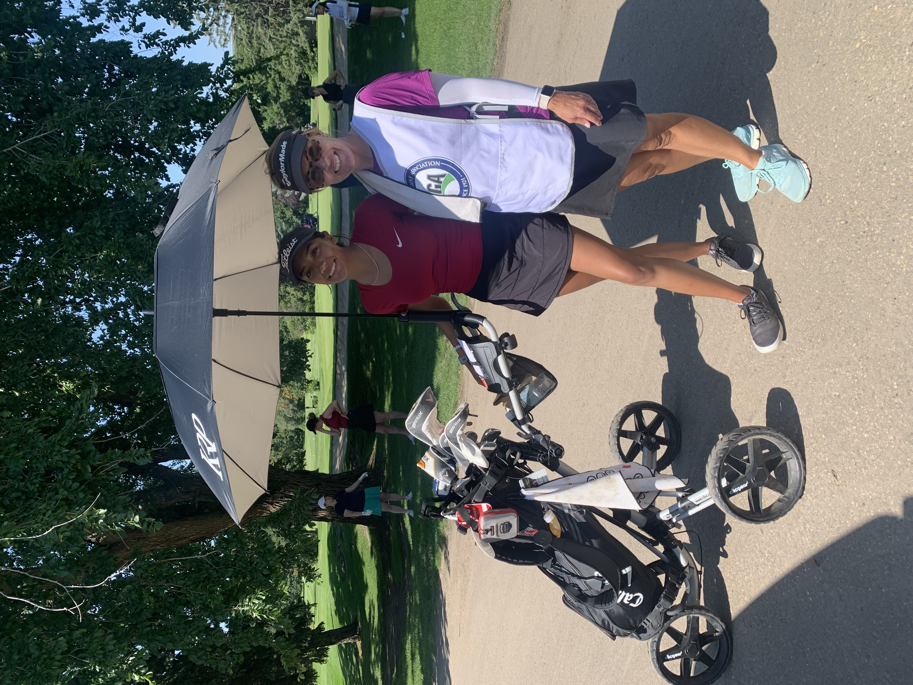
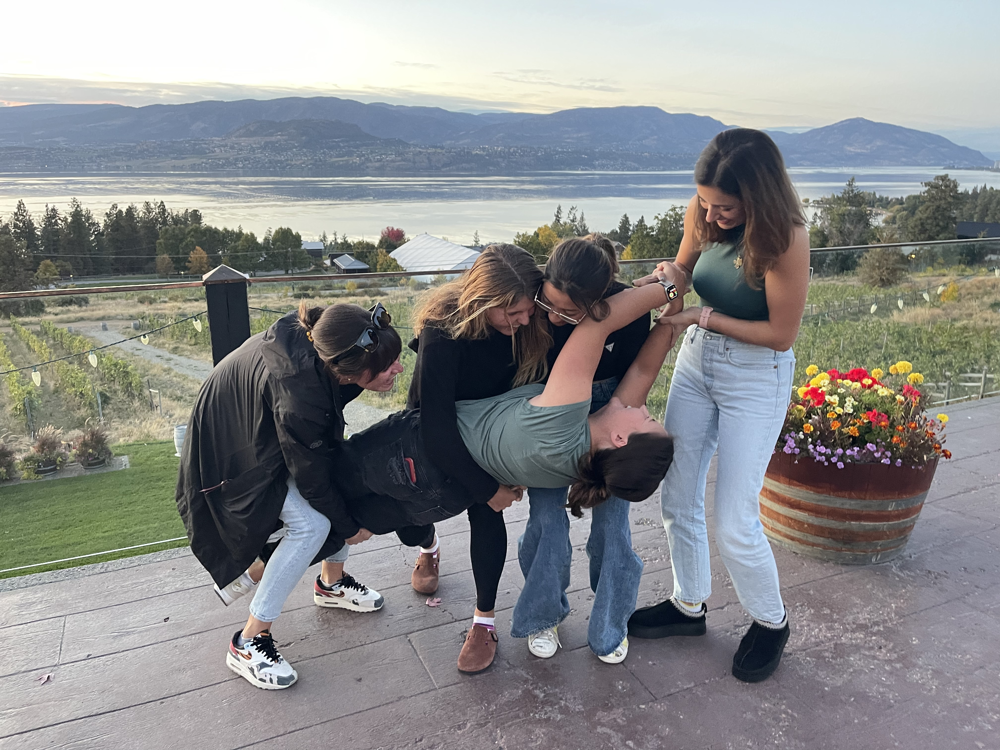
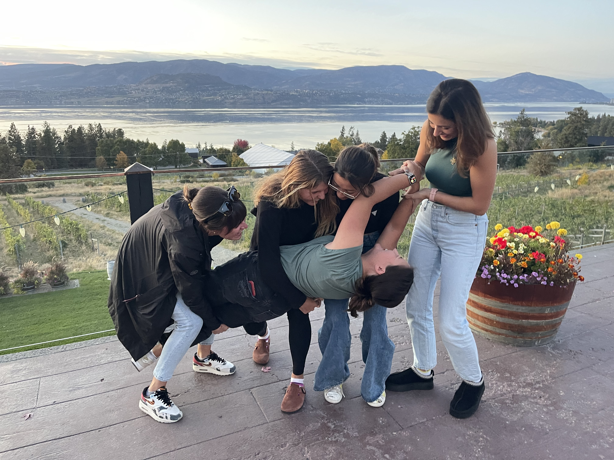

My Golf Journey ⛳
Hi, my name is Anna, golf has been a part of my life for as long as I can remember. I began playing when I was really young, inspired by my grandpa, who was an excellent golfer and first introduced me to the game. What started as time spent at the course with family quickly grew into a lifelong passion. I began competing in tournaments in 2020, which marked a turning point in my golf journey. Since then, I’ve continued to work on my skills, challenge myself, and grow as a player both on and off the course. Through dedication and countless hours of practice, I’ve now earned a spot on the University of Alberta Pandas golf team, a milestone I’m incredibly proud of. This page is where I share my achievements, experiences, and progress as I continue my journey in competitive golf.

 


 
